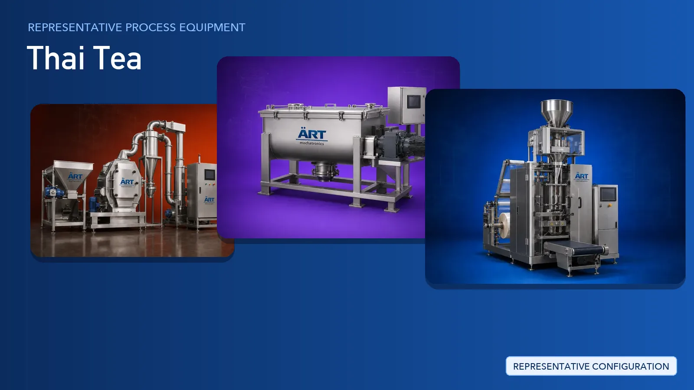

Thai Tea Plant & Machinery Solutions (Tea Blending, Premix & Packing Lines)
Thai tea is a blended beverage product built from black tea, sugar, creamer, spices and flavouring, sold as loose blend, tea bags, instant premix powder and single-serve sachet or stick packs.

About Thai Tea processing
ART Mechatronics provides complete turnkey solutions for Thai tea and beverage premix plants, offering systems for raw material intake, sifting and metal separation, grinding, blending, weighing and dosing, packing and dust control. Our solutions are designed for hygienic food-grade operation, uniform blend quality and automated production for domestic and export markets.
Complete Thai Tea Process Flow
Tea, sugar, creamer, spices and flavouring ingredients are received in bags and fed into the plant.
Ensures dust-controlled, continuous feeding.
Incoming material is screened to remove lumps, fibre and foreign matter, and passed over magnets to remove ferrous contamination.
Ensures:
- Clean, free-flowing ingredients
- Protection of downstream machinery
- Food safety compliance
Tea and dry ingredients are reduced to the required grade for blending or instant premix.
Produces:
- Uniform particle size
- Consistent extraction and dissolution
- Grades for loose tea, tea bag and premix
Tea, sugar, creamer, spices and flavouring are blended into a homogeneous mix.
Ensures:
- Uniform distribution of every ingredient
- Consistent colour and aroma
- Repeatable recipe from batch to batch
The finished blend is transferred to the packing line and dosed to the required pack size.
Ensures accurate, repeatable fills.
The blend or premix is packed in retail and bulk formats.
Suitable for:
- Single-serve sachet and stick packs
- Tea bags
- Retail pouches
- Bulk and institutional packs
Packs are checked for contamination and weight, coded and packed for dispatch.
Ensures traceability and export-ready cartons.
Dust generated at intake, grinding, blending and packing points is captured at source.
Ensures a clean plant, worker safety and product purity.
Turnkey Thai Tea Plant Solutions
ART Mechatronics offers complete turnkey solutions for Thai tea and beverage premix plants, including:
- Process design & plant layout
- Intake, sifting and conveying systems
- Grinding and particle sizing systems
- Blending and flavour mixing systems
- Weighing, dosing and packing line integration
- Dust collection and pollution control
- Automation & control panels
- Installation & commissioning
- After-sales support
We customize solutions based on:
- Product type (loose blend, tea bag, instant premix)
- Production capacity
- Blending and grinding requirements
- Packaging format (sachet, stick, pouch, bulk)
Why Choose ART Mechatronics for Thai Tea
- Proven experience in tea, spice and beverage premix plants
- Blending systems engineered for uniform recipes
- Grinding lines supplied with integrated dust control
- Hygienic food-grade machinery design
- Multi-format packing from sachet to bulk
- Automated production with PLC-based control
- Global export capability
Where it's used
Get pricing & specs for the Thai Tea plant
Share the product, target capacity, current process and plant location. These details help our engineers discuss the right machine or line configuration.
One partner, from design to start-up
ART Mechatronics designs, manufactures, installs and commissions your Thai Tea plant solution with regional presence in India, UAE and Thailand.